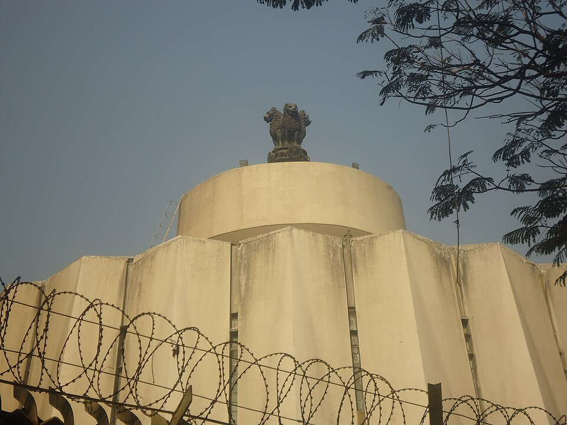
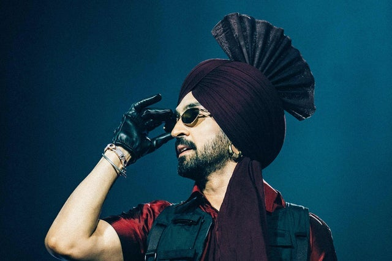
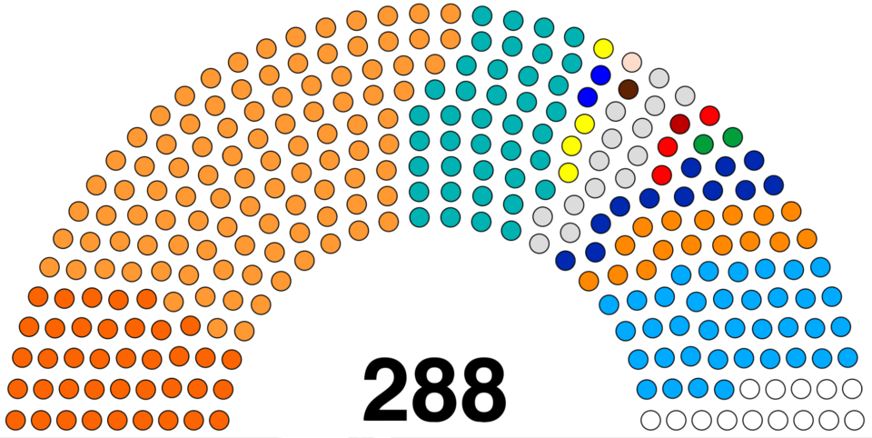
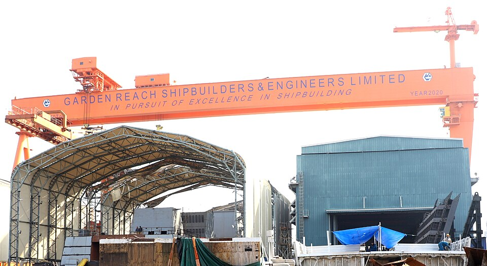

राष्ट्रीय
राष्ट्रीयभारतीय नौसेना को मिला आईएनएस विंध्यगिरि, ब्रह्मोस और बराक-8 से है लैस
भारतीय नौसेना को प्रोजेक्ट 17ए के तहत सातवां और आखिरी स्टील्थ गाइडेड मिसाइल फ्रिगेट आईएनएस विंध्यगिरि मिल गया है। कोलकाता के जीआरएसई ने शुक्रवार को इसे सौंपा।
ताज़ा ख़बरें
 राष्ट्रीय
राष्ट्रीयपुरी जगन्नाथ मंदिर: रत्न भंडार की सूची बनाने में 100 घंटे से अधिक का समय पूरा
पुरी के जगन्नाथ मंदिर के रत्न भंडार का ब्योरा तैयार करने में 100 घंटे से अधिक का समय बीत चुका है। आभूषणों की डिजिटल रिकॉर्डिंग और जांच का काम जारी है, जबकि तीन संदूकों को खोला जाना बाकी है।
राष्ट्रीयपंजाब के बठिंडा से आईएसआई का कथित जासूस गिरफ्तार, सैन्य ठिकानों की रेकी का आरोप
भारतीय सुरक्षा एजेंसियों ने पंजाब के बठिंडा में कार्रवाई करते हुए पाकिस्तान की खुफिया एजेंसी आईएसआई से जुड़े एक संदिग्ध जासूस को गिरफ्तार किया है। आरोपी पर सैन्य ठिकानों की जानकारी जुटाने का आरोप है।
 टेक
टेकहरियाणा के 20 वर्षीय इंजीनियरिंग छात्र करण छिल्लर को गूगल में मिली इंटर्नशिप
हरियाणा के बहादुरगढ़ के रहने वाले 20 साल के इंजीनियरिंग छात्र करण छिल्लर ने गूगल में साइट रिलायबिलिटी इंजीनियरिंग इंटर्नशिप हासिल की है। उन्होंने अपनी सफलता का श्रेय निरंतर कोडिंग और अभ्यास को दिया है।
राष्ट्रीयबारामूला के इरफ़ान हसन शाह का शव पाकिस्तान प्रशासित कश्मीर में मिला
पाकिस्तान प्रशासित कश्मीर में रह रहे परिवार से मिलने की कोशिश के दौरान नीलम नदी में डूबे भारतीय नागरिक इरफ़ान हसन शाह का शव बरामद कर लिया गया है।

राष्ट्रीयमहाराष्ट्र में परिसीमन विधेयक पर महा विकास आघाड़ी में मतभेद, कांग्रेस की पवार को नसीहत
प्रस्तावित परिसीमन विधेयक पर एमवीए में खींचतान शुरू हो गई है। महाराष्ट्र कांग्रेस ने शरद पवार की पार्टी द्वारा केंद्र के समर्थन पर सवाल उठाते हुए राज्यसभा चुनाव में दिए गए सहयोग की याद दिलाई है।
 राष्ट्रीय
राष्ट्रीयपरिसीमन बिल पर केंद्र सरकार को समर्थन देगी शरद पवार की एनसीपी
शरद पवार की पार्टी एनसीपी (एसपी) परिसीमन बिल पर केंद्र सरकार का समर्थन करेगी। सूत्रों के अनुसार, इसके बदले पार्टी ने केंद्र में मंत्री पद और राज्य सरकार में हिस्सेदारी की मांग की है।
राष्ट्रीयएनसीपी परिसीमन बिल का समर्थन कर सकती है, सुप्रिया सुले को मिल सकता है मंत्री पद
एनसीपी (एसपी) के विधायक जितेंद्र आव्हाड ने दावा किया है कि उनकी पार्टी संसद के आगामी विशेष सत्र में परिसीमन बिल का समर्थन करेगी। रिपोर्ट्स के अनुसार, इसके बदले सुप्रिया सुले को केंद्र में मंत्री बनाया जा सकता है।
राष्ट्रीयमुंबई कॉन्सर्ट में बम की धमकी पर दिलजीत दोसांझ का कड़ा जवाब
मुंबई में अपने कॉन्सर्ट के दौरान मिली बम की धमकियों पर पंजाबी सिंगर दिलजीत दोसांझ ने मंच से तीखी प्रतिक्रिया दी। उन्होंने कहा कि उनका मकसद लोगों को डराना है, लेकिन वे डरने वाले नहीं हैं।

राष्ट्रीयमुंबई कॉन्सर्ट: दिलजीत दोसांझ ने एक्ट्रेस सान्या मल्होत्रा को मंच पर बुलाया
मुंबई में आयोजित एक कॉन्सर्ट के दौरान पंजाबी गायक दिलजीत दोसांझ ने अभिनेत्री सान्या मल्होत्रा को मंच पर आमंत्रित किया। इसका एक वीडियो सोशल मीडिया पर सामने आया है।
 टेक
टेकहुंडई ने ऑटो ग्वांगझू में पेश की मरकरी इलेक्ट्रिक एसयूवी कॉन्सेप्ट
वाहन निर्माता कंपनी हुंडई ने ऑटो ग्वांगझू 2026 में अपनी नई एंट्री-लेवल इलेक्ट्रिक एसयूवी 'मरकरी कॉन्सेप्ट' से पर्दा उठाया है। इसे विशेष तौर पर चीनी बाजार के लिए तैयार किया गया है।

राष्ट्रीयमहाराष्ट्र में परिसीमन के मुद्दे पर कांग्रेस ने एनसीपी-एसपी पर साधा निशाना
केंद्र सरकार के प्रस्तावित परिसीमन का समर्थन करने पर महाराष्ट्र कांग्रेस ने सहयोगी एनसीपी (शरदचंद्र पवार) की आलोचना की है। कांग्रेस ने इस साल राज्यसभा चुनाव में शरद पवार को दिए गए समर्थन को याद दिलाया है।
व्यापारब्लैक फ़्राइडे सेल की शुरुआत कैसे हुई और इसे व्हाइट फ़्राइडे क्यों कहते हैं
दुनियाभर में मशहूर शॉपिंग सीज़न ब्लैक फ़्राइडे की शुरुआत अमेरिका से हुई थी। अरब देशों में सांस्कृतिक और धार्मिक कारणों से इसे व्हाइट फ़्राइडे कहा जाता है, जहां कंपनियां भारी छूट देती हैं।
व्यापारबॉक्स ऑफिस पर 'ये प्रेम मोल लिया' और 'रामायण' का शानदार प्रदर्शन
शुक्रवार को रिलीज हुई नई फिल्म 'ये प्रेम मोल लिया' ने पहले दिन चार करोड़ रुपये कमाए। वहीं, रणबीर कपूर स्टारर 'रामायण' ने 23वें दिन भी मजबूत पकड़ बनाते हुए 1,000 करोड़ का आंकड़ा पार कर लिया है।
 राष्ट्रीय
राष्ट्रीयसपा के चुनावी घोषणा पत्र की मुफ्त योजनाओं पर अर्थशास्त्रियों ने उठाए सवाल
समाजवादी पार्टी ने अपने चुनावी घोषणा पत्र की योजनाओं के लिए हर साल एक लाख करोड़ रुपये खर्च करने का खाका पेश किया है। अर्थशास्त्रियों ने इस पर वित्तीय संकट और अर्थव्यवस्था प्रभावित होने की आशंका जताई है।
राष्ट्रीयछत्तीसगढ़: राज्यसभा सांसद लक्ष्मी वर्मा सड़क हादसे में घायल, एम्स में भर्ती
छत्तीसगढ़ से राज्यसभा सांसद लक्ष्मी वर्मा रायपुर के पास सड़क हादसे में घायल हो गईं। बलौदा बाजार में कार्यक्रम से लौटते समय उनकी कार दुर्घटनाग्रस्त हुई, जिसके बाद उन्हें रायपुर एम्स में भर्ती कराया गया है।
राष्ट्रीयपंचायत सीजन 5 को लेकर अभिनेता फैसल मलिक ने दिए संकेत
लोकप्रिय वेब सीरीज 'पंचायत' के पांचवें सीजन को लेकर अभिनेता फैसल मलिक ने संकेत दिए हैं कि यह सीजन मनोरंजन और हास्य से भरपूर होगा।
 अंतरराष्ट्रीय
अंतरराष्ट्रीयअमेरिका में शक्तिशाली तूफ़ान से लाखों लोग बिजली से वंचित, हज़ारों उड़ानें प्रभावित
अमेरिका के पूर्वी तट पर आए शक्तिशाली तूफ़ान के कारण भारी बारिश और तेज़ हवाओं से जनजीवन अस्त-व्यस्त हो गया है। लाखों लोग बिजली के बिना रहने को मजबूर हैं और हज़ारों उड़ानें प्रभावित हुई हैं।
 खेल
खेलक्राइस्टचर्च टेस्ट: आकाशदीप ने लिए 5 विकेट, न्यूजीलैंड की पहली पारी 356 रनों पर सिमटी
क्राइस्टचर्च टेस्ट में न्यूजीलैंड की पहली पारी 356 रनों पर समाप्त हुई। भारत के तेज गेंदबाज आकाशदीप ने शानदार गेंदबाजी करते हुए 5 विकेट झटके, जो उनके टेस्ट करियर का दूसरा पांच-विकट हॉल है।
खेलभारत-न्यूजीलैंड दूसरा टेस्ट: कीवी टीम पहली पारी में 356 रन पर सिमटी
क्राइस्टचर्च में खेले जा रहे दूसरे टेस्ट के दूसरे दिन न्यूजीलैंड की पहली पारी 356 रन पर समाप्त हो गई। टॉम ब्लंडेल शतक से चूक गए, जबकि भारत की ओर से आकाशदीप ने पांच विकेट झटके।
राष्ट्रीयसंसद में परिसीमन बिल पर रस्साकशी के बीच विपक्ष में दरार
तमिलनाडु में राजनीतिक समीकरण बदलने और DMK के INDIA गठबंधन से अलग होने के बाद संसद में परिसीमन बिल पर विपक्षी एकता प्रभावित हो सकती है।
 राष्ट्रीय
राष्ट्रीयCBSE ने जारी की CTET दिसंबर 2026 की सिटी इंटिमेशन स्लिप
केंद्रीय माध्यमिक शिक्षा बोर्ड ने सीटेट दिसंबर 2026 परीक्षा के लिए सिटी इंटिमेशन स्लिप जारी कर दी है। परीक्षा 12 और 13 दिसंबर को होगी।
 राष्ट्रीय
राष्ट्रीयगुजरात मतदाता सूची: SIR के बाद जुड़े 8.46 लाख नए नाम, कुल वोटर 4.48 करोड़ हुए
गुजरात में विशेष गहन पुनरीक्षण (SIR) के बाद मतदाता सूची में 8.46 लाख नए नाम जुड़े हैं। इसके साथ ही राज्य में कुल मतदाताओं की संख्या बढ़कर 4.48 करोड़ हो गई है।
राष्ट्रीयकैट 2026 परीक्षा कल, अंतिम 24 घंटे में इन बातों का रखें ध्यान
देशभर में कॉमन एडमिशन टेस्ट (CAT) 2026 का आयोजन रविवार, 29 नवंबर को किया जाएगा। परीक्षा से ठीक पहले अंतिम 24 घंटों में उम्मीदवारों के लिए जरूरी दिशा-निर्देश जारी किए गए हैं।
 राष्ट्रीय
राष्ट्रीयभारतीय नौसेना को मिला प्रोजेक्ट 17A का सातवां युद्धपोत INS विंध्यगिरि
भारतीय नौसेना को प्रोजेक्ट 17A के सातवें और आखिरी युद्धपोत INS विंध्यगिरि की डिलीवरी कोलकाता में दे दी गई है। यह युद्धपोत ब्रह्मोस और बराक मिसाइलों से लैस है।

राष्ट्रीयभारतीय नौसेना को मिला INS विंध्यगिरि, ब्रह्मोस और बराक मिसाइलों से है लैस
भारतीय नौसेना को प्रोजेक्ट 17A के सातवें और आखिरी युद्धपोत INS विंध्यगिरि की डिलीवरी मिल गई है। कोलकाता में हुए कार्यक्रम में यह युद्धपोत नौसेना को सौंपा गया।
राष्ट्रीयपरिसीमन बिल पर कांग्रेस संसदीय रणनीति समूह की बैठक, विरोध की रणनीति तय
संसद के विशेष सत्र में संभावित परिसीमन बिल को लेकर कांग्रेस ने कड़ा विरोध जताने का फैसला किया है। हालांकि, इंडिया ब्लॉक के कुछ घटकों के रुख से पार्टी की राह मुश्किल हो सकती है।
अंतरराष्ट्रीयस्पेन के कैनरी आइलैंड के पास प्रवासियों की नाव से 8 शव बरामद
स्पेन के कैनरी आइलैंड के पास करीब 100 प्रवासियों से भरी एक नाव से 8 शव मिले हैं। गंभीर हालत में 6 लोगों को अस्पताल पहुंचाया गया है।
 राष्ट्रीय
राष्ट्रीयवाराणसी के नमो घाट पर आज से शुरू होगा जश्न-ए-बनारसिया, सीएम योगी करेंगे उद्घाटन
काशी की कला, संस्कृति और संगीत का तीन दिवसीय उत्सव 'जशन-ए-बनारसिया' शनिवार से नमो घाट पर शुरू होगा। मुख्यमंत्री योगी आदित्यनाथ इस आयोजन का उद्घाटन करेंगे।
 टेक
टेकएआई से 2027 में कोरोना से भी बड़ा संकट पैदा होने की आशंका
जीपीटी-5 की सुरक्षा जांच कर चुके निकोला युर्कोविच ने चेतावनी दी है कि 2027 तक आर्टिफिशियल इंटेलिजेंस इंसानी नियंत्रण से बाहर हो सकता है। इससे बड़े पैमाने पर मौतों और गंभीर संकट की आशंका जताई गई है।
 अंतरराष्ट्रीय
अंतरराष्ट्रीयबेलारूस के राष्ट्रपति लुकाशेंको ने पुतिन के यूक्रेन संबंधी ऐतिहासिक दावों पर उठाए सवाल
रूस के करीबी सहयोगी और बेलारूस के राष्ट्रपति अलेक्जेंडर लुकाशेंको ने व्लादिमीर पुतिन के यूक्रेन पर ऐतिहासिक दावों पर सवाल उठाया है। उन्होंने कहा कि इतिहास के आधार पर जमीन का दावा किया जाए तो रूस को भी मंगोलिया को जमीन लौटानी होगी।
राष्ट्रीयउत्तराखंड में प्रशासनिक फेरबदल, 5 IAS और 5 PCS अधिकारियों के तबादले
उत्तराखंड शासन ने प्रशासनिक व्यवस्था में बदलाव करते हुए 5 आईएएस और 5 पीसीएस अधिकारियों के तबादले किए हैं। नैनीताल और अल्मोड़ा के जिलाधिकारियों की भी जिम्मेदारी बदली गई है।
राष्ट्रीयपश्चिम बंगाल में बिसलेरी के पानी में मिले बैक्टीरिया, FSSAI ने दी मुकदमा चलाने की मंजूरी
जलपाईगुड़ी स्थित बिसलेरी प्लांट के पानी के सैंपल में कोलीफॉर्म बैक्टीरिया की पुष्टि हुई है। इसके बाद FSSAI ने कंपनी के खिलाफ दूसरी बार मुकदमा चलाने की मंजूरी दी है।
 अंतरराष्ट्रीय
अंतरराष्ट्रीयईरान से धमकियों के बीच अमेरिका में ट्रंप प्रशासन के वरिष्ठ अधिकारी सैन्य ठिकानों पर शिफ्ट
सुरक्षा और ईरान से मिल रही धमकियों के बाद अमेरिकी राष्ट्रपति डोनाल्ड ट्रंप प्रशासन के कई वरिष्ठ कैबिनेट सदस्य वॉशिंगटन डीसी में सुरक्षित सैन्य आवासों में चले गए हैं।
 राष्ट्रीय
राष्ट्रीयउत्तर रेलवे का फैसला: कोहरे के कारण दिल्ली मंडल की 25 ट्रेनें तीन महीने के लिए रद्द
सर्दियों में कोहरे के बढ़ते प्रकोप को देखते हुए उत्तर रेलवे ने दिल्ली मंडल की 25 ट्रेनों को एक दिसंबर से 28 फरवरी तक रद्द कर दिया है। इससे एनसीआर के विभिन्न शहरों के यात्रियों को असुविधा हो सकती है।
 राष्ट्रीय
राष्ट्रीयपरिसीमन बिल और ईडी मामलों को लेकर कांग्रेस सांसद मणिकम टैगोर का डीएमके पर हमला
कांग्रेस सांसद मणिकम टैगोर ने परिसीमन विधेयक पर रुख और ईडी मामलों को लेकर डीएमके पर सवाल उठाए हैं। उन्होंने पूछा कि डीएमके का रुख अचानक नरम क्यों हो गया है।
राष्ट्रीयदिल्ली पुलिस ने जैश-ए-मोहम्मद के संदिग्ध को किया गिरफ्तार, जांच जारी
दिल्ली पुलिस की स्पेशल सेल ने जैश-ए-मोहम्मद से जुड़े एक संदिग्ध को गिरफ्तार किया है। शुरुआती जांच में आशंका है कि उसे सोशल मीडिया के जरिए भर्ती किया गया था।
राष्ट्रीयसंसद में पेश होने वाले महिला आरक्षण और परिसीमन विधेयक के मुख्य बिंदु
संसद में पेश होने वाले नए परिसीमन और महिला आरक्षण विधेयक के अनुसार, अधिनियम लागू होने के बाद केंद्र सरकार जल्द ही एक परिसीमन आयोग का गठन करेगी।
राष्ट्रीयपरिसीमन को लेकर अखिलेश यादव का भाजपा पर निशाना, नोटबंदी से की तुलना
समाजवादी पार्टी प्रमुख अखिलेश यादव ने परिसीमन के मुद्दे पर भाजपा सरकार पर हमला बोला है। उन्होंने इसे नोटबंदी जैसा कदम बताते हुए कहा कि यह भाजपा की राजनीति की सबसे बड़ी भूल होगी।
राष्ट्रीयपरिसीमन विधेयक पर समर्थन के बदले शरद पवार की पार्टी की सत्ता में हिस्सेदारी की मांग
एनसीपी (शरद पवार) ने परिसीमन विधेयक पर समर्थन के एवज में केंद्र और महाराष्ट्र सरकार में सत्ता में हिस्सेदारी की मांग की है। सूत्रों के अनुसार सुप्रिया सुले के लिए केंद्रीय मंत्रिमंडल में जगह मांगी गई है।